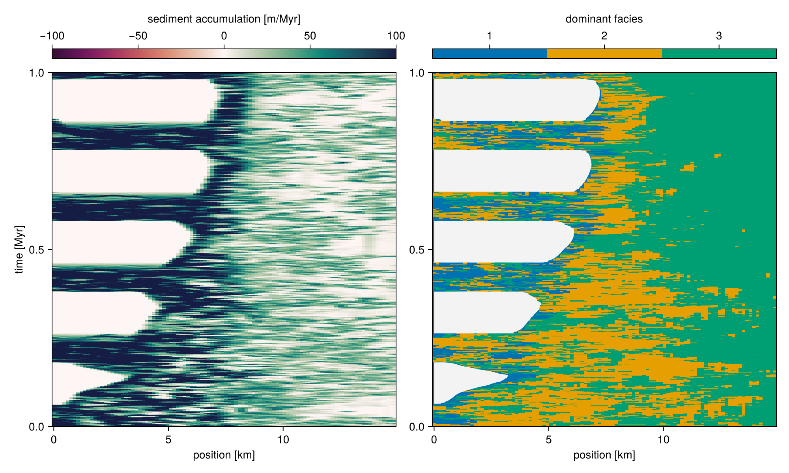

Wheeler diagram

file:examples/visualization/wheeler_diagram.jl
#| creates: docs/src/_fig/wheeler_diagram.png
#| requires: data/output/alcap-example.h5
#| collect: figures
module Script
using CairoMakie
using CarboKitten.Export: read_slice
using CarboKitten.Visualization: wheeler_diagram
function main()
header, data = read_slice("data/output/alcap-example.h5", :profile)
fig = wheeler_diagram(header, data)
save("docs/src/_fig/wheeler_diagram.png", fig)
end
end
Script.main()file:ext/WheelerDiagram.jl
module WheelerDiagram
import CarboKitten.Visualization: wheeler_diagram, wheeler_diagram!
using CarboKitten.Export: Header, Data, DataSlice, read_data, read_slice
using CarboKitten.Utility: in_units_of
using Makie
using Unitful
using CarboKitten.BoundaryTrait
using CarboKitten.Stencil: convolution
const na = [CartesianIndex()]
elevation(h::Header, d::DataSlice) =
let bl = h.initial_topography[d.slice..., na],
sr = h.axes.t[end] * h.subsidence_rate
bl .+ d.sediment_thickness .- sr
end
water_depth(header::Header, data::DataSlice) =
let h = elevation(header, data),
wi = data.write_interval,
s = header.subsidence_rate .* (header.axes.t[1:wi:end] .- header.axes.t[end]),
l = header.sea_level[1:wi:end]
h .- (s.+l)[na, :]
end
const Rate = typeof(1.0u"m/Myr")
function sediment_accumulation!(ax::Axis, header::Header, data::DataSlice;
smooth_size::NTuple{2,Int}=(3, 11),
colormap=Reverse(:curl),
range::NTuple{2,Rate}=(-100.0u"m/Myr", 100.0u"m/Myr"))
wi = data.write_interval
magnitude = sum(data.deposition .- data.disintegration; dims=1)[1, :, :] ./ (header.Δt * wi)
blur = convolution(Shelf, ones(Float64, smooth_size...) ./ *(smooth_size...))
wd = zeros(Float64, length(header.axes.x), length(header.axes.t[1:wi:end]))
blur(water_depth(header, data) / u"m", wd)
mag = zeros(Float64, length(header.axes.x), length(header.axes.t[1:wi:end]) - 1)
blur(magnitude / u"m/Myr", mag)
ax.ylabel = "time [Myr]"
ax.xlabel = "position [km]"
xkm = header.axes.x |> in_units_of(u"km")
tmyr = header.axes.t[1:wi:end] |> in_units_of(u"Myr")
sa = heatmap!(ax, xkm, tmyr, mag;
colormap=colormap, colorrange=range ./ u"m/Myr")
#contour!(ax, xkm, tmyr, wd;
# levels=[0], color=:red, linewidth=2, linestyle=:dash)
return sa
end
function dominant_facies!(ax::Axis, header::Header, data::DataSlice;
smooth_size::NTuple{2,Int}=(3, 11),
colors=Makie.wong_colors())
n_facies = size(data.production)[1]
colormax(d) = getindex.(argmax(d; dims=1)[1, :, :], 1)
wi = data.write_interval
dominant_facies = colormax(data.deposition)
blur = convolution(Shelf, ones(Float64, smooth_size...) ./ *(smooth_size...))
wd = zeros(Float64, length(header.axes.x), length(header.axes.t[1:wi:end]))
blur(water_depth(header, data) / u"m", wd)
ax.ylabel = "time [Myr]"
ax.xlabel = "position [km]"
xkm = header.axes.x |> in_units_of(u"km")
tmyr = header.axes.t[1:wi:end] |> in_units_of(u"Myr")
ft = heatmap!(ax, xkm, tmyr, dominant_facies;
colormap=cgrad(colors[1:n_facies], n_facies, categorical=true),
colorrange=(0.5, n_facies + 0.5))
contourf!(ax, xkm, tmyr, wd;
levels=[0.0, 10000.0], colormap=Reverse(:grays))
#contour!(ax, xkm, tmyr, wd;
# levels=[0], color=:black, linewidth=2)
return ft
end
function wheeler_diagram!(ax1::Axis, ax2::Axis, header::Header, data::DataSlice;
smooth_size::NTuple{2,Int}=(3, 11),
range::NTuple{2,Rate}=(-100.0u"m/Myr", 100.0u"m/Myr"))
linkyaxes!(ax1, ax2)
sa = sediment_accumulation!(ax1, header, data; smooth_size=smooth_size, range=range)
ft = dominant_facies!(ax2, header, data; smooth_size=smooth_size)
ax2.ylabel = ""
return sa, ft
end
function wheeler_diagram(header::Header, data::DataSlice;
smooth_size::NTuple{2,Int}=(3, 11),
range::NTuple{2,Rate}=(-100.0u"m/Myr", 100.0u"m/Myr"))
fig = Figure(size=(1000, 600))
ax1 = Axis(fig[2, 1])
ax2 = Axis(fig[2, 2])
sa, ft = wheeler_diagram!(ax1, ax2, header, data; smooth_size=smooth_size, range=range)
Colorbar(fig[1, 1], sa; vertical=false, label="sediment accumulation [m/Myr]")
Colorbar(fig[1, 2], ft; vertical=false, ticks=1:3, label="dominant facies")
fig
end
endProduction curve
file:examples/visualization/production_curve.jl
#| creates: docs/src/_fig/production_curve.svg
#| requires: data/output/alcap-example.h5
#| collect: figures
using CairoMakie
using CarboKitten.Visualization: production_curve
save("docs/src/_fig/production_curve.svg", production_curve("data/output/alcap-example.h5"))file:ext/ProductionCurve.jl
module ProductionCurve
using Makie
using Unitful
using HDF5
import CarboKitten.Components.Common: AbstractInput
import CarboKitten.Visualization: production_curve!, production_curve
using CarboKitten.Components.Production: Facies, production_rate
function production_curve!(ax, input::I) where I <: AbstractInput
ax.title = "production at $(sprint(show, input.insolation; context=:fancy_exponent=>true))"
ax.xlabel = "production [m/Myr]"
ax.ylabel = "depth [m]"
ax.yreversed = true
for f in input.facies
depth = (0.1:0.1:50.0)u"m"
prod = [production_rate(input.insolation, f, d) for d in depth]
lines!(ax, prod / u"m/Myr", depth / u"m")
end
end
function production_curve(input::I) where I <: AbstractInput
fig = Figure()
ax = Axis(fig[1, 1])
production_curve!(ax, input)
fig
end
function production_curve(filename::AbstractString)
h5open(filename, "r") do fid
fig = Figure()
ax = Axis(fig[1, 1])
production_curve!(ax, fid["input"])
fig
end
end
function production_curve!(ax, g::HDF5.Group; max_depth=-50.0u"m")
a = HDF5.attributes(g)
insolation = 400.0u"W/m^2" # a["insolation"][] * u"W/m^2"
ax.title = "production at $(sprint(show, insolation; context=:fancy_exponent=>true))"
ax.xlabel = "production [m/Myr]"
ax.ylabel = "depth [m]"
for i in 1:a["n_facies"][]
fa = HDF5.attributes(g["facies$(i)"])
f = Facies(
maximum_growth_rate = fa["maximum_growth_rate"][] * u"m/Myr",
extinction_coefficient = fa["extinction_coefficient"][] * u"m^-1",
saturation_intensity = fa["saturation_intensity"][] * u"W/m^2")
depth = (0.1u"m":0.1u"m":-max_depth)
prod = [production_rate(insolation, f, d) for d in depth]
lines!(ax, prod / u"m/Myr", - depth / u"m")
end
end
endStratigraphic Column
file:ext/StratigraphicColumn.jl
module StratigraphicColumn
using Makie
using Unitful
import CarboKitten.Visualization: stratigraphic_column!
using CarboKitten.Export: Header, DataColumn, stratigraphic_column, age_depth_model
function scdata(header::Header, data::DataColumn)
n_facies = size(data.production)[1]
n_times = length(header.axes.t) - 1
sc = zeros(Float64, n_facies, n_times)
for f = 1:n_facies
sc[f, :] = stratigraphic_column(header, data, f) / u"m"
end
colormax(d) = getindex.(argmax(d; dims=1)[1, :], 1)
adm = age_depth_model(data.sediment_thickness)
return (ys_low=adm[1:end-1] / u"m", ys_high=adm[2:end] / u"m", facies=colormax(sc)[1:end])
end
function stratigraphic_column!(ax::Axis, header::Header, data::DataColumn; color=Makie.wong_colors())
(ys_low, ys_high, facies) = scdata(header, data)
hspan!(ax, ys_low, ys_high; color=color[facies])
end
function stratigraphic_column!(ax::Axis, header::Header, data::Observable{DataColumn}; color=Makie.wong_colors())
_scdata = lift(d -> scdata(header, d), data)
_ys_low = lift(d -> d.ys_low, _scdata)
_ys_high = lift(d -> d.ys_high, _scdata)
_color = lift(d -> color[d.facies], _scdata)
hspan!(ax, _ys_low, _ys_high; color=_color)
end
end